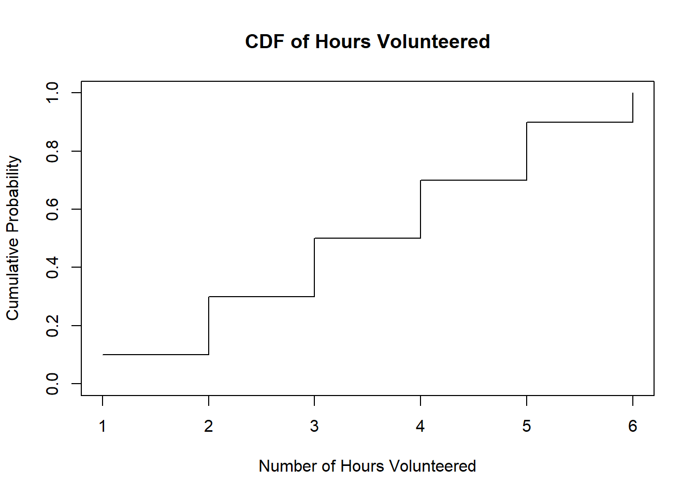

Distribution Theory
2024-03-26
Chapter 1 Distribution Functions, Probability Densities, and Standard Distribution Functions
1.1 Distribution Functions
Distribution functions, also known as cumulative distribution functions (CDFs), are fundamental in understanding the behavior of random variables. A distribution function \(F(x)\) for a random variable \(X\) is defined as:
\[ F(x) = P(X \leq x) \]
This function gives the probability that the random variable \(X\) takes on a value less than or equal to \(x\).
1.2 Probability Densities and their Relations
Probability densities are functions that describe the likelihood of a continuous random variable taking on a particular value. For a continuous random variable \(X\), the probability density function (PDF), denoted as \(f(x)\), is defined such that for any interval \((a, b]\), the probability that \(X\) falls in that interval is given by:
\[ P(a < X \leq b) = \int_{a}^{b} f(x) \, dx \]
The relationship between the probability density function \(f(x)\) and the cumulative distribution function \(F(x)\) is:
\[ F(x) = \int_{-\infty}^{x} f(t) \, dt \]
This means that the CDF is the integral of the PDF from \(-\infty\) to \(x\).
1.3 Standard Distribution Functions
Standard distribution functions are those that are commonly encountered and have well-defined properties. Some of the most important standard distribution functions include:
- Normal Distribution (Gaussian Distribution):
- Characterized by its bell-shaped curve.
- Described by two parameters: mean (\(\mu\)) and standard deviation (\(\sigma\)).
- The probability density function of the standard normal distribution (\(N(0,1)\)) is given by: \[ f(x) = \frac{1}{\sqrt{2\pi}} e^{-\frac{x^2}{2}} \]
- Uniform Distribution:
- All outcomes in a range are equally likely.
- Defined by its minimum and maximum values.
- The probability density function for a uniform distribution on the interval \([a, b]\) is: \[ f(x) = \frac{1}{b - a} \]
- Exponential Distribution:
- Models the time between events in a Poisson process.
- Characterized by a single parameter \(\lambda\), the rate parameter.
- The probability density function of the exponential distribution is: \[ f(x) = \lambda e^{-\lambda x} \]
These standard distribution functions play crucial roles in various statistical analyses and are foundational in probability theory and statistical inference.
1.4 Discrete Random Variables
In many real-world scenarios, we encounter random experiments and variables whose outcomes can be analyzed systematically. This chapter focuses on understanding discrete random variables, which are often found in various applications.
1.4.1 Example 1: Voice Communication System
Consider a voice communication system with 48 external lines. Let’s define a random variable \(X\) representing the number of lines in use at a given time. \(X\) can take integer values from 0 to 48. For instance, if 10 lines are in use, \(x = 10\).
1.4.2 Example 2: Selecting Fans at a Football Game
Suppose we randomly select three fans at a football game between Bauchi State University, Gadau (BASUG) and Abubakar Tafawa Balewa University (ATBU). We want to identify whether each fan is a BASUG fan (\(B\)) or an ATBU fan (\(A\)). This experiment yields the following sample space:
\[ S = \{(B, B, B), (B, B, A), (B, A, B), (B, A, A), (A, B, B), (A, B, A), (A, A, B), (A, A, A)\} \]
Let \(X\) be the number of BASUG fans selected. The possible values of \(X\) are 0, 1, 2, or 3. Now, let’s find the probability that \(X\) takes on a particular value.
Suppose that 70% of the fans are BASUG fans (\(B\)), while 30% are ATBU fans (\(A\)). That is, \(P(B) = 0.7\) and \(P(A) = 0.3\). Then, by independence:
\[ P(X = 0) = P(AAA) = 0.3 \times 0.3 \times 0.3 = 0.027 \]
And, by independence and mutual exclusivity:
\[ P(X = 1) = P(BAA) + P(ABA) + P(AAB) = 0.7 \times 0.3 \times 0.3 + 0.3 \times 0.7 \times 0.3 + 0.3 \times 0.3 \times 0.7 = 0.189 \]
Likewise:
\[ P(X = 2) = 0.7 \times 0.7 \times 0.3 + 0.7 \times 0.3 \times 0.7 + 0.3 \times 0.7 \times 0.7 = 0.441 \]
\[ P(X = 3) = 0.7 \times 0.7 \times 0.7 = 0.343 \]
Finally, by independence:
\[ P(X \leq 3) = 1 \]
1.4.3 Notes:
- The results make sense, as it’s more likely to select 2 or 3 BASUG fans given that 70% of the fans are from BASUG.
- The probabilities behave well, as they are all greater than 0 and the probability of the entire sample space is 1.
- The variable \(X\), which represents the number of BASUG fans selected, is called a random variable.
1.5 Probability Distributions and Probability Mass Functions
Probability distributions and probability mass functions (PMFs) are concepts used to describe the likelihood of different outcomes in a random process. Let’s break down these ideas in simpler terms:
1.5.1 What is a Probability Distribution?
Imagine you’re playing a game with a spinner that has different colored sections. Each time you spin the spinner, it lands on a different color. A probability distribution tells you the chances of landing on each color. For example, it might say there’s a 30% chance of landing on blue, a 20% chance of landing on red, and so on.
1.5.2 What is a Probability Mass Function (PMF)?
A probability mass function is like a detailed map of the probabilities in our game with the spinner. It shows us the probability of every possible outcome. So, if our spinner has colors blue, red, green, and yellow, the PMF would tell us the chances of landing on each of these colors. For instance, it might say there’s a 30% chance of landing on blue, a 25% chance of landing on red, a 20% chance of landing on green, and a 25% chance of landing on yellow.
1.5.3 How Do They Help?
Understanding probability distributions and PMFs helps us make predictions and decisions in uncertain situations. By knowing the probabilities of different outcomes, we can anticipate what might happen and plan accordingly. For example, if we know the probability distribution of student grades in a class, we can estimate how many students might get an A, B, or C, which can help teachers prepare their lessons.
1.6 Probability Mass Function (PMF) for Discrete Random Variables
For a discrete random variable \(X\) with possible values \(x_1, x_2, . . . x_n\), a probability mass function (PMF) is a function such that:
- \(f(x_i) \geq 0 \quad \text{for all} \quad x_i\): It assigns a probability \(f(x_i)\) to each possible value \(x_i\).
- \(f(x_i) = P(X=x_i)\): The probability assigned to each value \(x_i\) is non-negative.
- \(\sum_{i}^{n} f(x_i) = 1\): The sum of probabilities for all possible values \(x_i\) equals 1, denoted as:
1.6.1 Example
Let \(X\) equal the number of siblings of BASUG students. The support of \(X\) is, of course, 0, 1, 2, 3, … Because the support contains a countably infinite number of possible values, \(X\) is a discrete random variable with a probability mass function. Find \(P(X = x)\), the probability mass function of \(X\), for all \(x\) in the support.
To find the probability mass function \(P(X = x)\), we need to consider the probability of having \(x\) siblings for each possible value of \(x\) in the support.
To solve the example using the provided distribution:
\[\begin{array} & x & P(X = x) \\ \hline\\ 0 & 0.41 \\ 1 & 0.45 \\ 2 & 0.11 \\ 3 & 0.03 \\ \hline\\ \end{array}\]The probability mass function \(P(X = x)\) is directly provided in the distribution.
1.6.2 Example:
Let \(f(x) = cx^2\) for \(x = 1, 2, 3\). Determine the constant \(c\) so that the function \(f(x)\) satisfies the conditions of being a probability mass function.
To be a probability mass function, \(f(x)\) must satisfy two conditions:
- \(f(x) \geq 0\) for all \(x\).
- \(\sum_{\text{all } x} f(x) = 1\).
Given that \(x\) takes on values 1, 2, and 3, we can write the equation for condition 2:
\[ \sum_{x=1}^{3} cx^2 = 1 \]
Substituting the values of \(x\):
\[ c(1^2) + c(2^2) + c(3^2) = 1 \]
\[ c(1) + c(4) + c(9) = 1 \]
\[ c + 4c + 9c = 1 \]
\[ 14c = 1 \]
\[ c = \frac{1}{14} \]
So, the constant \(c\) is \(\frac{1}{14}\).
1.6.3 Example
Determine the constant \(c\) so that the following p.m.f. of the random variable \(Y\) is a valid probability mass function:
\[ f(y) = c\left(\frac{1}{4}\right)^y \text{ for } y = 1, 2, 3, \ldots \]
To be a valid probability mass function, \(f(y)\) must satisfy two conditions:
- \(f(y) \geq 0\) for all \(y\).
- \(\sum_{\text{all } y} f(y) = 1\).
Given that \(y\) takes on values 1, 2, 3, …, we can write the equation for condition 2:
\[ \sum_{y=1}^{\infty} c\left(\frac{1}{4}\right)^y = 1 \]
Using the formula for the sum of an infinite geometric series:
\[ \frac{c \left(\frac{1}{4}\right)}{1 - \frac{1}{4}} = 1 \]
\[ \frac{c \left(\frac{1}{4}\right)}{\frac{3}{4}} = 1 \]
\[ \frac{c}{3} = 1 \]
\[ c = 3 \]
So, the constant \(c\) is 3, making the p.m.f. a valid probability mass function.
1.6.4 Example 3-13: Determining the Probability Mass Function of a Random Variable
The sample space of a random experiment is \(S = \{a, b, c, d, e, f\}\),and each outcome is equally likely. A random variable is defined as follows:
\[\begin{array} Outcome & \(x\) \\ \hline\\ a & 0 \\ b & 0 \\ c & 1.5 \\ d & 1.5 \\ e & 2 \\ f & 3 \\ \end{array}\]Determine the probability mass function (PMF) of \(X\).
Solution We need to find the probability of each value in the range of \(X\).
1.6.4.1 Calculation:
- \(P(X = 0)\): The values 0 occur twice in the outcomes, for outcomes a and b. Since each outcome is equally likely, \(P(X = 0) = \frac{2}{6} = \frac{1}{3}\).
- \(P(X = 1.5)\): The values 1.5 occur twice in the outcomes, for outcomes c and d. Hence, \(P(X = 1.5) = \frac{2}{6} = \frac{1}{3}\).
- \(P(X = 2)\): The value 2 occurs once in the outcomes, for outcome e. Thus, \(P(X = 2) = \frac{1}{6}\).
- \(P(X = 3)\): The value 3 occurs once in the outcomes, for outcome f. Therefore, \(P(X = 3) = \frac{1}{6}\).
1.6.4.2 Probability Mass Function (PMF) of \(X\):
- \(P(X = 0) = \frac{1}{3}\)
- \(P(X = 1.5) = \frac{1}{3}\)
- \(P(X = 2) = \frac{1}{6}\)
- \(P(X = 3) = \frac{1}{6}\)
The probability mass function of \(X\) is given by: \[ P(X = x) = \begin{cases} \frac{1}{3} & \text{if } x = 0 \text{ or } x = 1.5 \\ \frac{1}{6} & \text{if } x = 2 \text{ or } x = 3 \\ 0 & \text{otherwise} \end{cases} \]
This PMF describes the probabilities associated with each possible value of the random variable \(X\).
1.6.5 Example 3-25
An assembly consists of three mechanical components. The probabilities that the first, second, and third components meet specifications are 0.95, 0.98, and 0.99, respectively. Assume that the components are independent. Determine the probability mass function of the number of components in the assembly that meet specifications.
1.6.5.1 Solution:
Let’s define a random variable \(X\) to represent the number of components in the assembly that meet specifications. We can observe that \(X\) can take on values from 0 to 3, as there can be zero, one, two, or all three components that meet specifications.
1.6.5.2 Calculation:
- \(P(X = 0)\): The probability that none of the components meet specifications is calculated by multiplying the probabilities of each component failing to meet specifications: \(P(X = 0) = (1 - 0.95) \times (1 - 0.98) \times (1 - 0.99)\).
- \(P(X = 1)\): The probability that exactly one component meets specifications is calculated by considering the probability that one component meets specifications and the other two fail: \(P(X = 1) = (0.95) \times (1 - 0.98) \times (1 - 0.99)\), and so on for \(X = 2\) and \(X = 3\).
1.6.5.3 Probability Mass Function (PMF) of \(X\):
- \(P(X = 0) = (1 - 0.95) \times (1 - 0.98) \times (1 - 0.99) = 8 \times 10^{-6}\)
- \(P(X = 1) = (0.95) \times (1 - 0.98) \times (1 - 0.99) + (1 - 0.95) \times (0.98) \times (1 - 0.99) + (1 - 0.95) \times (1 - 0.98) \times (0.99) = 0.0012\)
- \(P(X = 2) = (0.95) \times (0.98) \times (1 - 0.99) + (0.95) \times (1 - 0.98) \times (0.99) + (1 - 0.95) \times (0.98) \times (0.99) = 0.0576\)
- \(P(X = 3) = (0.95) \times (0.98) \times (0.99) = 0.9412\)
Calculating these probabilities will give us the probability mass function of \(X\), representing the likelihood of having 0, 1, 2, or 3 components in the assembly that meet specifications.
1.7 Cumulative Distribution Functions (CDFs)
In probability theory and statistics, a Cumulative Distribution Function (CDF) is a function that gives the probability that a random variable \(X\) will take on a value less than or equal to a given value \(x\). Mathematically, the CDF of a random variable \(X\), denoted by \(F(x)\), is defined as:
\[ F(x) = P(X \leq x) \]
In simpler terms, the CDF at a specific value \(x\) tells us the probability that the random variable \(X\) will be less than or equal to \(x\). This function provides a comprehensive summary of the distribution of \(X\), capturing both the probability of individual values and cumulative probabilities up to a certain value.
1.7.1 Properties of CDFs:
The cumulative distribution function of a discrete random variable X, denoted as \(F(x)\), is \[ F(x) = P(X \le x)=\sum_{x_i \le x}f(x_i) \]
For a discrete random variable X, \(F(x)\) satisfies the following properties.
Non-Decreasing: \(F(x) = P(X \le x)=\sum_{x_i \le x}f(x_i)\) meaning as \(x\) increases, \(F(x)\) does not decrease.
Bounded: \(0 \le F(x) \le 1\) The CDF is bounded between 0 and 1, inclusive.
Monotonicity: If \(x \le y\), then \(F(x) \le F(y)\). In other words, the CDF is monotonically non-decreasing.
1.7.2 Example
Suppose \(x\) is a discrete random variable. Let the probability mass function (pmf) of \(x\) be equal to \(f(x) = \frac{5 - x}{10}\) for \(x = 1, 2, 3, 4\). Suppose we want to find the cumulative distribution function (cdf) of \(x\), denoted as \(F_X(t) = P(X \leq t)\).
To find the cdf, we need to sum up the probabilities of all possible values of \(x\) less than or equal to \(t\).
For \(t = 1\): \[ F_X(1) = P(X \leq 1) = f(1) = \frac{5 - 1}{10} = \frac{4}{10} = 0.4 \]
For \(t = 2\): \[ F_X(2) = P(X \leq 2) = f(1) + f(2) = \frac{4}{10} + \frac{5 - 2}{10} = \frac{4}{10} + \frac{3}{10} = \frac{7}{10} = 0.7 \]
For \(t = 3\): \[ F_X(3) = P(X \leq 3) = f(1) + f(2) + f(3) = \frac{4}{10} + \frac{3}{10} + \frac{5 - 3}{10} = \frac{4}{10} + \frac{3}{10} + \frac{2}{10} = \frac{9}{10} = 0.9 \]
For \(t = 4\): \[ F_X(4) = P(X \leq 4) = f(1) + f(2) + f(3) + f(4) = \frac{4}{10} + \frac{3}{10} + \frac{2}{10} + \frac{5 - 4}{10} = \frac{4}{10} + \frac{3}{10} + \frac{2}{10} + \frac{1}{10} = 1 \]
So, the cumulative distribution function \(F_X(t)\) for \(x\) is:
\[ F_X(t) = \begin{cases} 0 & \text{if } t < 1 \\ 0.4 & \text{if } 1 \leq t < 2 \\ 0.7 & \text{if } 2 \leq t < 3 \\ 0.9 & \text{if } 3 \leq t < 4 \\ 1 & \text{if } t \geq 4 \end{cases} \]
It is worth noting that \(P(X \le2)\) does not equal \(P(X<2)\);\(P(X\le 2)=P(X=1, 2)\) and \(P(X<2)=P(X=1)\). It is very important for you to carefully read the problems in order to correctly set up the probabilities. You should also look carefully at the notation if a problem provides it.
1.7.3 Example:
Suppose we have a family with three children. The sample space for this situation is \(\mathbf{S} = \{ BBB, BBG, BGB, GBB, GGG, GGB, GBG, BGG \}\) where \(B = \text{boy}\) and \(G = \text{girl}\). Suppose the probability of having a boy is the same as the probability of having a girl. Let the random variable \(X\) be the number of boys. Then \(X\) will have the following pmf:
\[ \begin{array}{|c|c|c|c|c|} \hline t & 0 & 1 & 2 & 3 \\ \hline P(X=t) & \frac{1}{8} & \frac{3}{8} & \frac{3}{8} & \frac{1}{8} \\ \hline \end{array} \]
To find the cumulative distribution function (CDF) \(F(t)\), which represents the probability that \(X\) is less than or equal to a given value \(t\), we sum up the probabilities up to \(t\):
For \(t = 0\): \(F(0) = P(X \leq 0) = P(X = 0) = \frac{1}{8}\)
For \(t = 1\): \(F(1) = P(X \leq 1) = P(X = 0) + P(X = 1) = \frac{1}{8} + \frac{3}{8} = \frac{4}{8}\)
For \(t = 2\): \(F(2) = P(X \leq 2) = P(X = 0) + P(X = 1) + P(X = 2) = \frac{1}{8} + \frac{3}{8} + \frac{3}{8} = \frac{7}{8}\)
For \(t = 3\): \(F(3) = P(X \leq 3) = P(X = 0) + P(X = 1) + P(X = 2) + P(X = 3) = \frac{1}{8} + \frac{3}{8} + \frac{3}{8} + \frac{1}{8} = 1\)
So, the cumulative distribution function \(F(t)\) is:
\[ \begin{array}{|c|c|} \hline t & F(t) \\ \hline 0 & \frac{1}{8} \\ 1 & \frac{4}{8} \\ 2 & \frac{7}{8} \\ 3 & 1 \\ \hline \end{array} \]
1.7.4 Example
Express the following probabilities in terms of the CDF, \(F_X(t)\), if \(X\) is a discrete random variable with support such that \(x\) is any integer from 0 to \(b\) and \(0 \leq a \leq b\):
- \(P(X \leq a)\)
This represents the cumulative probability up to \(a\). It can be calculated using the CDF: \[ P(X \leq a) = F_X(a) \]
- \(f_X(a) = P(X = a)\), where \(f_X(x)\) is the PMF of \(x\)
This represents the probability of the specific value \(a\). It can be directly obtained from the PMF: \[ P(X=a)=P(X\le a)-P(X\le a-1)=F_X(a)-F_X(a-1) \]
- \(P(X < a)\)
This represents the cumulative probability up to \(a - 1\). It can be calculated using the CDF: \[ P(X<a)=P(X\le a)-P(X=a)=P(X\le a-1)=F_X(a-1) \]
- \(P(X \geq a)\)
This represents the probability from \(a\) up to the maximum value in the support. It can be calculated using the complement of the cumulative probability up to \(a - 1\): \[ P(X\ge a)=1-P(X\le a-1)=1-F_X(a-1) \]
1.7.5 Example
Let \(X\) have distribution function \(F\). What is the distribution function and expectation of \(\frac{X - \mu}{\sigma}\)? In other words, find the distribution function in terms of \(F_X\) and the expectation in terms of \(E(X)\).
To find the distribution function of \(\frac{X - \mu}{\sigma}\), where \(\mu\) is the mean of \(X\) and \(\sigma\) is the standard deviation of \(X\), we need to first find the distribution function \(F_{\frac{X - \mu}{\sigma}}(x)\). This can be done using the transformation formula for distribution functions:
\[ F_{\frac{X - \mu}{\sigma}}(x) = P\left(\frac{X - \mu}{\sigma} \leq x\right) = F_X(\mu + \sigma x) \]
So, the distribution function of \(\frac{X - \mu}{\sigma}\) in terms of \(F_X\) is \(F_{\frac{X - \mu}{\sigma}}(x) = F_X(\mu + \sigma x)\).
To find the expectation of \(\frac{X - \mu}{\sigma}\), we use the properties of expectation:
\[ E\left(\frac{X - \mu}{\sigma}\right) = \frac{1}{\sigma}E(X - \mu) = \frac{1}{\sigma}(E(X) - \mu) \]
So, the expectation of \(\frac{X - \mu}{\sigma}\) in terms of \(E(X)\) is \(E\left(\frac{X - \mu}{\sigma}\right) = \frac{1}{\sigma}(E(X) - \mu)\).
1.7.6 Example:
Consider a random variable \(X\) representing the outcome of rolling a fair six-sided die. The CDF of \(X\) would be:
\[ F(x) = \begin{cases} 0 & \text{if } x < 1 \\ \frac{1}{6} & \text{if } 1 \leq x < 2 \\ \frac{2}{6} & \text{if } 2 \leq x < 3 \\ \frac{3}{6} & \text{if } 3 \leq x < 4 \\ \frac{4}{6} & \text{if } 4 \leq x < 5 \\ \frac{5}{6} & \text{if } 5 \leq x < 6 \\ 1 & \text{if } x \geq 6 \\ \end{cases} \]
This CDF tells us the probability of rolling a number less than or equal to \(x\) on a fair six-sided die. For example, \(F(3)\) would be \(\frac{3}{6} = 0.5\), indicating a 50% chance of rolling a number less than or equal to 3.
1.7.7 Example
Let’s consider a scenario where we want to determine the cumulative distribution function (CDF) for the number of hours volunteered by individuals at a community center. The random variable \(X\) represents the number of hours volunteered.
1.7.7.1 Step 1: Data Collection
We collect data on the number of hours volunteered by ten individuals at the community center:
| Individual | Hours Volunteered |
|---|---|
| 1 | 2 |
| 2 | 4 |
| 3 | 3 |
| 4 | 5 |
| 5 | 1 |
| 6 | 6 |
| 7 | 3 |
| 8 | 2 |
| 9 | 4 |
| 10 | 5 |
Step 2: Sorting and Calculation
Sort the data in ascending order: \(X = \{1, 2, 2, 3, 3, 4, 4, 5, 5, 6\}\)
Calculate the cumulative frequencies:
- For \(x = 1\), \(F(1) = 1/10\)
- For \(x = 2\), \(F(2) = 3/10\)
- For \(x = 3\), \(F(3) = 5/10\)
- For \(x = 4\), \(F(4) = 7/10\)
- For \(x = 5\), \(F(5) = 9/10\)
- For \(x = 6\), \(F(6) = 10/10 = 1\)
1.7.7.2 Step 3: Plotting the CDF
Here’s the plot of the cumulative distribution function (CDF) for the number of hours volunteered at the community center:

We plot the CDF using the cumulative frequencies obtained in Step 2. This graph visually represents the probability that the number of hours volunteered is less than or equal to a given value.